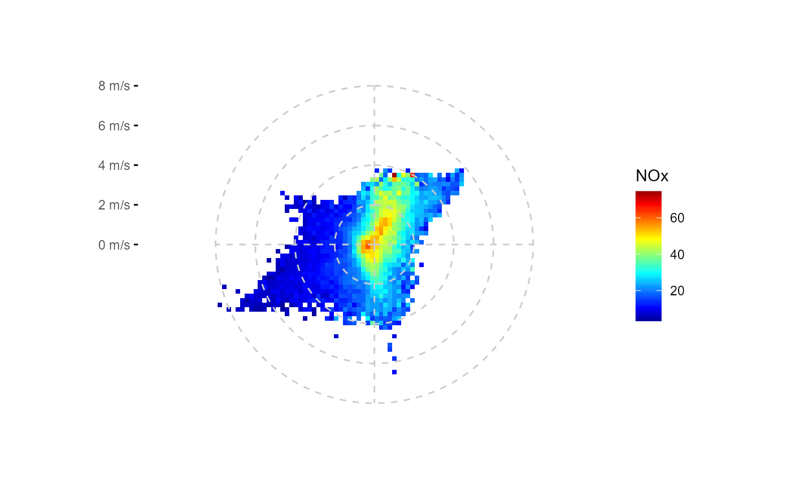
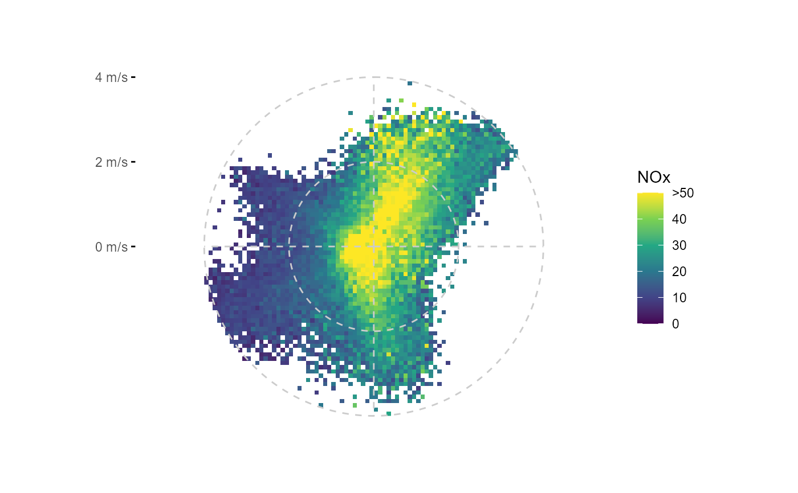
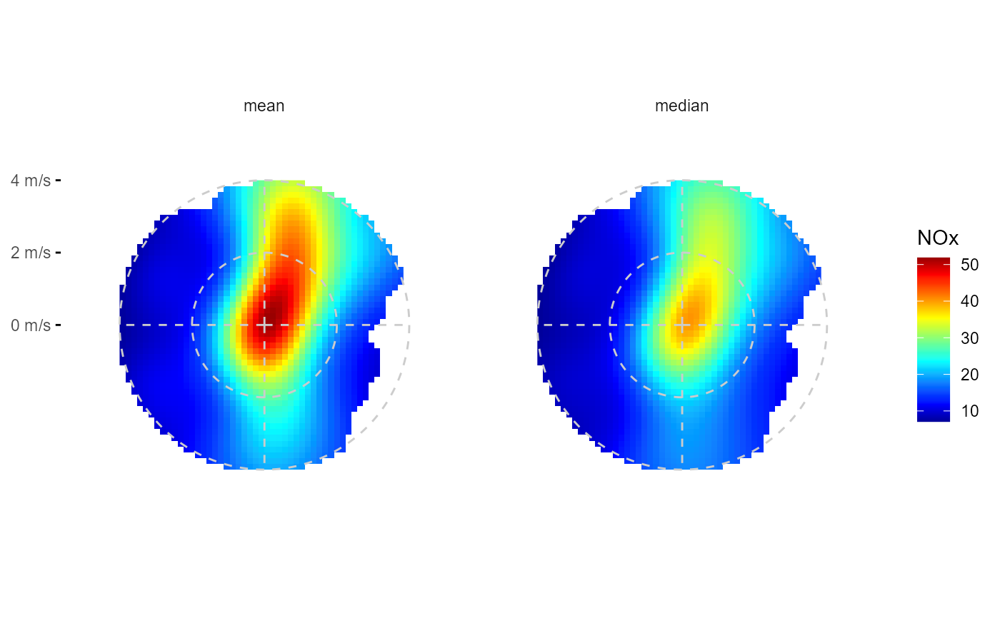
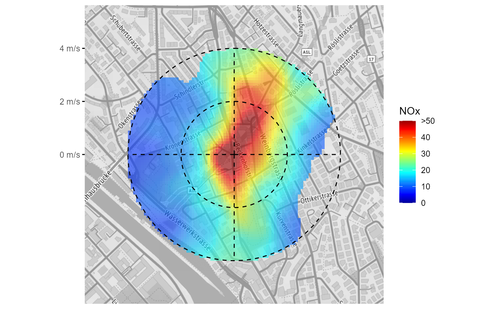

Inspired and derived from openair::polarPlot(), i.e. applying a stat function on data to yield a wind direction +
wind velocity heatmap, (in cartesian u, v wind component space); includes options for smoothing, flexible grid
setting, flexible stat functions, data extrapolation and plotting over a raster map.
ggpolarplot(data, ws, wd, z, groupings = grp(), fun = "mean", fun.args = list(na.rm = TRUE), nmin = 3, ws_max = NA, smooth = TRUE, k = 200, extrapolate = TRUE, dist = 0.1, pixels = 80^2, fill_scale = scale_fill_gradientn(colours = matlab::jet.colors(20), na.value = NA), ylabels = scales::unit_format(unit = "m/s"), breaks = waiver(), bg = NULL, ...)
Arguments
| data | tibble containing wind speed, wind direction and air pollutant data |
|---|---|
| ws | symbol giving the wind velocity parameter name (wind velocity preferably in m/s) |
| wd | symbol giving the wind direction parameter name in degrees |
| z | symbol giving the parameter name to be summarised |
| groupings | additional groupings. Use helper |
| fun | function or list of functions for summary. |
| fun.args | a list of extra arguments to pass to fun. |
| nmin | numeric, minimum number of values for fun, if n < nmin: NA is returned |
| ws_max | numeric or Inf, maximum wind velocity for binning: above ws_max, z is set NA |
| smooth | TRUE/FALSE, applies if groups = c("u", "v"); should smoothing of summary results should be performed
using |
| k | numeric, applies if smooth = TRUE; degree of smoothing in smooth term in |
| extrapolate | TRUE/FALSE, applies if smooth = TRUE; |
| dist | numeric, fraction of 1, applies if smooth = TRUE and extrapolate = TRUE; maximum distance to next coordinate-pair at which the result of fit_gam_surface(z) should be returned |
| pixels | number of bins at the 2-dimensional u, v wind component coordinate system |
| fill_scale | ggplot2 continuous fill scale, e.g. |
| ylabels | function to format ylabels. Default adds unit " m/s" |
| breaks | waiver() or numeric vector, provides y-axis breaks |
| bg | raster map, e.g. ggmap object as plot background |
| ... | Other arguments passed on to |
Value
ggplot2::ggplot() object
Examples
#> #>#> #> #>#> #> #>fn <- rOstluft.data::f("Zch_Stampfenbachstrasse_2010-2014.csv") df <- rOstluft::read_airmo_csv(fn) %>% rOstluft::rolf_to_openair() %>% dplyr::mutate(wday = lubridate::wday(date, label = TRUE, week_start = 1)) # simple ggpolarplot(df, wd = wd, ws = ws, z = NOx)#> Warning: Removed 3772 rows containing missing values (geom_raster).# change smoothing degree, add custom breaks and change grid style, different fill scale fs <- scale_fill_viridis_c(na.value = NA) ggpolarplot(df, wd = wd, ws = ws, z = NOx, k = 25, fill_scale = fs, breaks = seq(0,8,2)) + theme(panel.grid.major = element_line(linetype = 2, size = 0.25, color = "gray80"))#> Warning: Removed 3772 rows containing missing values (geom_raster).# no data extrapolation ggpolarplot(df, wd = wd, ws = ws, z = NOx, extrapolate = FALSE, breaks = seq(0,8,2))#> Warning: Removed 5402 rows containing missing values (geom_raster).#> Warning: Removed 5402 rows containing missing values (geom_raster).# squish maximum NOx concentration and cut off wind velocity at 4 m/s fs = scale_fill_viridis_squished(limits = c(0,50), breaks = seq(0,50,10), na.value = NA) ggpolarplot(df, wd = wd, ws = ws, z = NOx, ws_max = 4, fill_scale = fs, smooth = FALSE, breaks = c(0, 2, 4))#> Warning: Removed 3450 rows containing missing values (geom_raster).# like jet colors better, want it smoothed? ggpolarplot(df, wd = wd, ws = ws, z = NOx, ws_max = 4, smooth = TRUE, breaks = 0:4) + scale_fill_gradientn_squished(limits = c(0,50), breaks = seq(0,50,10), na.value = NA, colors = matlab::jet.colors(100))#> #>#> Warning: Removed 1740 rows containing missing values (geom_raster).# change binning parameters ggpolarplot(df, wd = wd, ws = ws, z = NOx, smooth = FALSE, pixels = 50^2, nmin = 10, breaks = seq(0,6,2))#> Warning: Removed 2140 rows containing missing values (geom_raster).# facetting variable must be included in grp ggpolarplot(df, wd = wd, ws = ws, z = NOx, groupings = grp(wday), ws_max = 4, pixels = 50^2, k = 25, breaks = c(0, 2, 4)) + facet_wrap(vars(wday))#> Warning: Removed 6006 rows containing missing values (geom_raster).# different stat fun ggpolarplot(df, wd = wd, ws = ws, z = NOx, fun = "quantile", fun.args = list(probs = 0.95, na.rm = TRUE), breaks = seq(0,10,2))#> Warning: Removed 3772 rows containing missing values (geom_raster).# facetting by stat ggpolarplot(df, wd = wd, ws = ws, z = NOx, fun = list("mean", "median"), ws_max = 4, pixels = 50^2, k = 25, breaks = c(0, 2, 4)) + facet_wrap(vars(stat))#> Warning: Removed 1230 rows containing missing values (geom_raster).# background map, just remember the location on the map has no correlation with # the overlaying data. Only the direction. bb <- bbox_lv95(2683141, 1249040, 500) bg <- get_stamen_map(bb) fs <- scale_fill_gradientn_squished( limits = c(0,50), breaks = seq(0,50,10), na.value = NA, colors = matlab::jet.colors(20) ) ggpolarplot(df, wd = wd, ws = ws, z = NOx, ws_max = 4, bg = bg, alpha = 0.6, fill_scale = fs, smooth = TRUE, breaks = c(0,2,4)) + theme( panel.grid.major = element_line(linetype = 2, color = "black", size = 0.5) )#> Warning: Removed 1740 rows containing missing values (geom_raster).